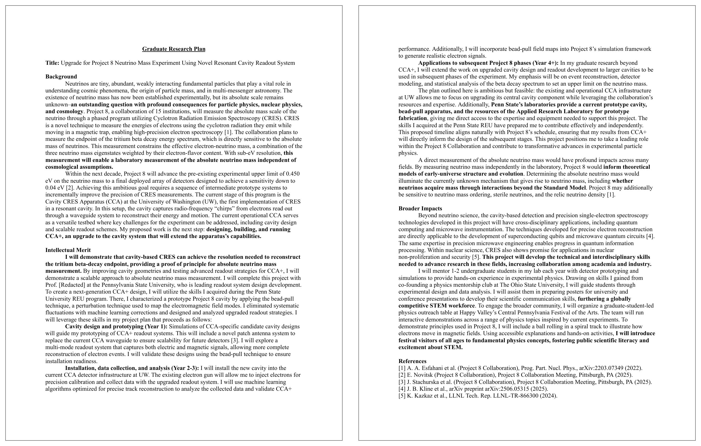
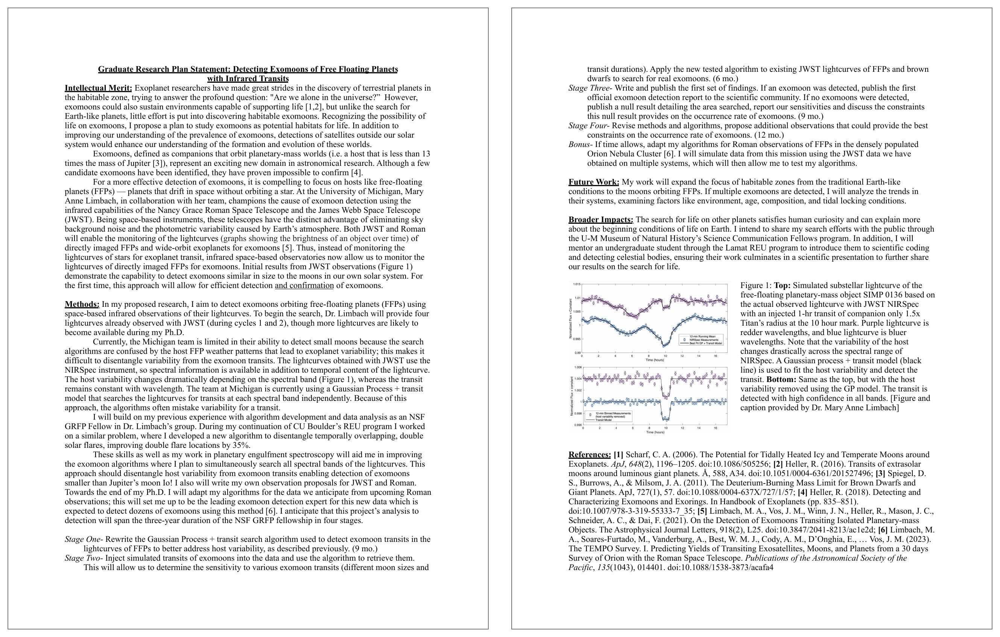

Research Proposals and GRFP-Style Writing
PHYS 4604 · Lecture 6
2026-10-02
Upcoming
| What | When | Points |
|---|---|---|
| Research proposal, GRFP style | Oct. 9, 11:59 PM ET | 15% |
| NSF GRFP reference letters | Oct. 16, 8:00 PM ET | – |
| NSF GRFP deadline – Physics & Astronomy | Oct. 23, 8:00 PM ET | – |
The goal of today’s lecture: turn the research proposal due Oct. 9 from a topic you like into two pages a reviewer can score.
The two review criteria
Every reviewer scores you on exactly two things.
Intellectual Merit
Your potential to advance knowledge.
- Is the question worth asking?
- Can you carry it out?
Broader Impacts
Your potential to benefit society.
- Outreach, teaching, mentoring
- Broadening participation in STEM
- Applications beyond your subfield
Broader Impacts is where most physics applications fail. It is not a paragraph you append at the end. Write it into both documents.
Intellectual Merit
NSF’s criterion is “the potential to advance knowledge.” The GRFP applies it to the applicant. Reviewers may weigh your ability to:
- Plan and conduct research
- Work independently and on a team
- Interpret and communicate research
- Take initiative and think creatively
- Solve problems
- Persist and overcome challenges
- Show intellectual ability: grades, coursework, awards
Your research plan is evidence for this list. A clear, feasible plan shows you can plan research; the writing shows you can communicate it.
NSF 26-526, Section VI.A · (U.S. National Science Foundation 2026b)
A proposal is not a summary of a field
A literature review tells the reader what is known. A proposal names one open question and commits to attacking it.
A topic
I want to study dark matter using galaxy rotation curves.
What would you actually doon a workday?
A question
Can archival rotation curves tell a cored halo from a cuspy one?
Names the data, the sample, and the measurement.
Can’t say what you’d measure/calculate? Then it’s a topic, not a question.
The structure that fits in two pages
| Section | What it does |
|---|---|
| Title | Names the question, not the subfield |
| Motivation / Background | Why this problem, why now |
| Research Question or Objective | The one thing you commit to |
| Approach / Methods | How you would actually do it |
| Intellectual Merit | Required heading |
| Broader Impacts | Required heading |
| References | Count against the two pages |
Use the exact headings Intellectual Merit and Broader Impacts, kept separate, in both statements.
Where your two pages go
| Section | Rough budget |
|---|---|
| Title and Motivation | ~1/2 page |
| Research Question | 2–3 sentences |
| Approach / Methods | ~3/4 page |
| Intellectual Merit | ~1/4 page |
| Broader Impacts | ~1/4 page |
| References | ~1/4 page |
Over two pages? Cut in this order:
- Background the reviewer already knows
- References that only pad
- Method details beyond what shows feasibility
My rule of thumb: methods get the most space. Never cut the question or Broader Impacts.
Writing Intellectual Merit
The reviewer’s question: is this worth doing, and can you do it?
- The gap: what is not known, and a citation showing it is not
- The approach: why your method can close that gap
- You: what you have already done that shows you can do this (a technique, instrument, code, or result)
- The scope: feasible for an early graduate student with a mentor
- The payoff: what the field learns if it works, and if it does not
Feasible beats ambitious. A project that can work in three years scores better than a field-changing idea that cannot.
Writing Broader Impacts
Done beats promised. “I will do outreach” is weak. “I have tutored for three years and will extend that to …” is strong.
Common sources in physics
- Outreach and public engagement
- Open software, tools, and data
- Mentoring and teaching
- Applications: energy, health, infrastructure
Make it concrete
- Who benefits?
- How many, and how often?
- How would you know it worked?
- Why are you the one to do it?
Tie it to your research and to what you have already done.
Write for a reviewer outside your subfield
Reviewers know your broad field, not necessarily your subfield. NSF advises: do not be overly technical; explain your rationale.
Do
- Say why it matters, in plain words
- Define every acronym
- Explain why before how
Don’t
- Use your group’s shorthand
- Assume they know the key paper
- Spend lines on derivations
Could a physicist from another subfield explain your question back to you?
Make the page skimmable
A reviewer reads many applications. Assume the first pass is a skim.
- Bold the research question so it can be found in seconds
- Start each paragraph with its point; details follow
- Short paragraphs and white space, not a wall of text
- Use the section headings from the structure slide
- One figure at most, and only if it replaces a paragraph
If a reviewer read only your headings, your bold text, and your first sentences, would they know what you are proposing?
More in the technical writing guide.
Sentence-level style
| Instead of | Write |
|---|---|
| It is hoped that this research could potentially help… | This work will test whether… |
| Measurements will be performed on the samples. | I will measure the samples’ resistivity from 4 to 300 K. |
| A very novel and extremely important approach | An approach that resolves X, which Y cannot |
| A large dataset | 12,000 archival spectra |
- First person, active voice. You are the one doing the work.
- Future tense for the plan; past tense for what you have already done.
- Numbers and names beat adjectives.
Example: antibiotic resistance

Copyright © by the Authors · Source: (Broad Research Communication Lab, n.d.)
Example: viral photosensitivity

Copyright © by the Authors · Source: (Broad Research Communication Lab, n.d.)
Example: neutrino mass with Project 8

Copyright © by Rachel White · Source: (“NSF GRFP Help” 2026)
Example: exomoon astrophysics

Copyright © by Brooke Kotten · Source: (“NSF GRFP Help” 2026)
What NSF enforces
| Rule | Requirement |
|---|---|
| Length | 2 pages, including references and figures |
| Page | 8.5 × 11 in., PDF only |
| Margins | 1 in. on all sides, with nothing in them: no header, footer, name, or page number |
| Font | Times New Roman or Computer Modern, ≥ 11 pt; Arial, Courier New, or Palatino Linotype, ≥ 10 pt |
| Spacing | At least single-spaced (about 6 lines per inch) |
| Exceptions | Smaller text only in equations, figures, tables, and captions |
| Headings | Intellectual Merit and Broader Impacts, separate |
LaTeX puts a page number in the bottom margin by default. That breaks the margin rule. Turn it off.
Setting it up in LaTeX
Do not cheat the page limit
- No
\linespreadbelow 1 - No negative
\vspace - No body text below 11 pt
Reviewers notice a crammed page.
Start from the starter template. New to LaTeX? Learn LaTeX in 30 minutes.
Advice and examples from past applicants
- NSF GRFP Help: winning essays, including the 2026 cycle
- Alex Lang: NSF Fellowship: a detailed guide and a table of successful essays
- Claire McKay Bowen: Advice on Applying: each application component
- Rachel White: Guide to Graduate School Applications: a physics applicant’s statements
- MIT CommKit: NSF GRFP Research Proposal: today’s annotated examples
Rules change. Check every example against the current NSF requirements before you copy its format.
References
PHYS 4604 · Fall 2026 · Georgia Institute of Technology